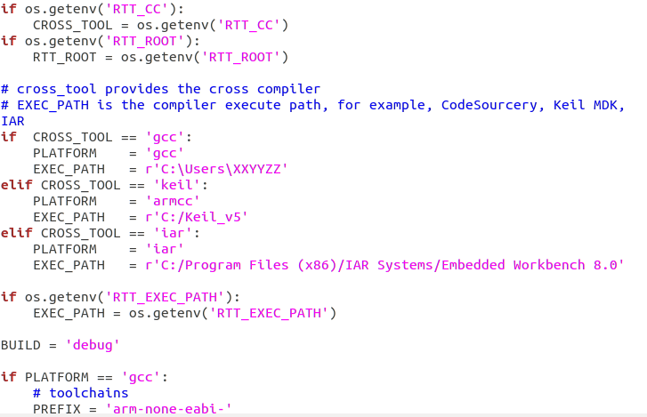
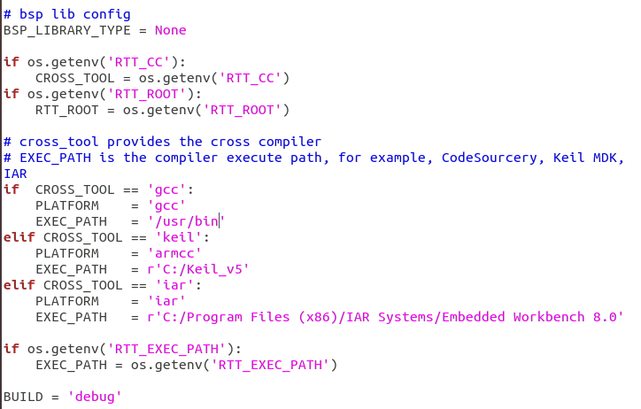
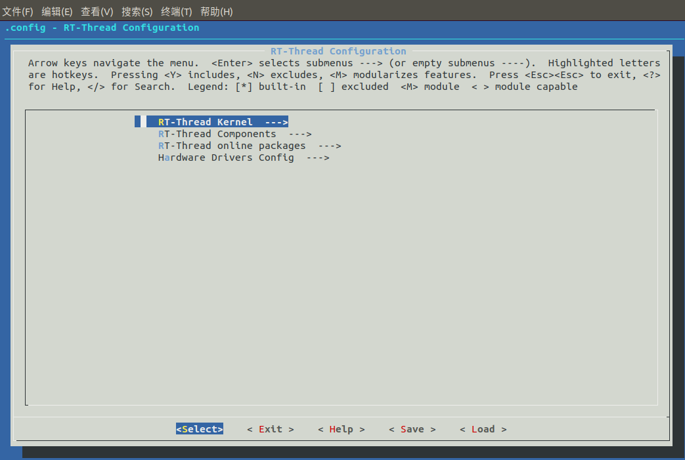
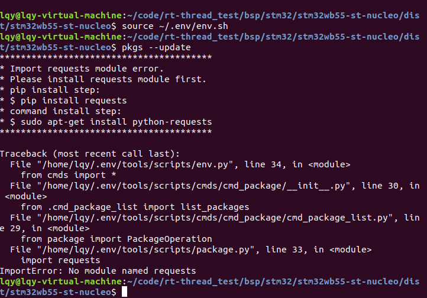
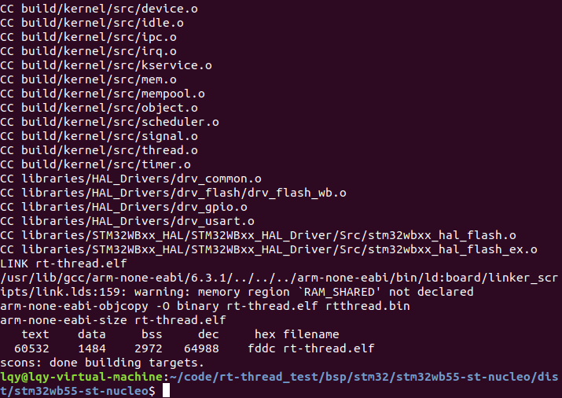

6. Linux下搭建 RT-Thread 开发环境
6.1. 前言
相信许多人做单片机开发选择windows是因为方便，易操作，使用keil等IDE，但是做Linux的嵌入式开发，如果用Windows安装交叉编译器编译太耗时，所以许多人同时选择使用Linux下开发，那Linux下如何开发RT-Thread呢？下面我将大致说一下环境的基础搭建。
6.2. 开发前环境准备
相关安装
大家都知道Windows下安装软件下载.exe执行安装，Linux下有rpm包安装方式，deb包安装方式，tar.gz源代码包安装方式，tar.bz2源代码包安装方式，apt方式安装方式（安装deb包），此处我们使用apt方式简单快捷。
注意：
apt-get是debian，ubuntu发行版的包管理工具，与红帽中的yum工具非常类似。
apt-get命令一般需要root权限执行，所以一般跟着sudo命令例sudo apt-get xxxx
安装git
sudo apt install git
安装编译器
sudo apt install gcc-arm-none-eabi
sudo apt install binutils-arm-none-eabi
安装 scons
sudo apt install scons
安装 ncurses 库
sudo apt install libncurses5-dev
克隆 RT-Thread 源码
git clone https://github.com/RT-Thread/rt-thread.git
配置使用编译器
下载源码后进入你开发版目录修改rtconfig.py 文件中的 EXEC_PATH来配置编译器

修改为

至此准备工作结束。
6.3. 工程配置
接下来在使用开发版的根目录下启动终端，输入如下命令来启动配置界面。
scons --menuconfig

是不是熟悉的画面回来了？
注意：
Linux下的配置工具和uboot等配置工具操作一样，返回需按两下ESC
如果第一次使用该命令将会安装及初始化env工具，在home目录下面生成“.env”文件夹，此文件夹为隐藏文件夹，
env.sh 文件是用于配置环境变量的脚本，执行如下命令使环境变量生效。
source ~/.env/env.sh
如果您已经选择了在线软件包，就可以使用如下命令将软件包下载到 BSP 目录下的 packages 目录。
pkgs --update
如果是第一次安装会失败，如下

这是因为我们没有安装Python-第三方库requests
sudo apt-get install python-requests
之后再运行
pkgs --update
6.4. 编译工程
执行
scons

6.5. 编译成功
Linux下强烈推荐使用 Vscode 作为代码编辑器（Windows下也推荐，Mac下也推荐，宇宙第一编辑器，哈哈哈）